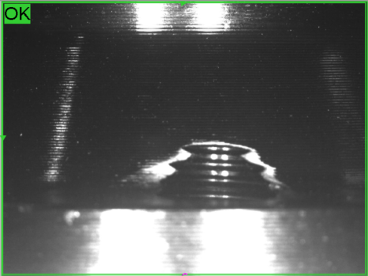

미션 부품 투입
- 제품 공급
- 검사 위치 진입
Automotive · Cognex AI Classification
제품별로 달라지는 나사탭과 위치 편차를 Cognex AI Classification으로 판정한 자동차 부품 자동검사 사례
자동차 미션 부품의 나사탭(Tap) 가공 여부를 작업자가 직접 확인하던 공정에 Cognex AI Classification을 적용했습니다. 제품마다 탭 개수가 0개부터 최대 6개까지 달라지고 공급 위치와 방향에도 편차가 있어 룰베이스 검사 구성이 복잡했던 공정을 AI 이미지 분류 방식으로 단순화하고, 제품 1개당 1초 미만의 검사시간으로 기존 생산속도를 유지하도록 구축한 프로젝트입니다.

Project Summary
01 · Overview
자동차 부품 생산에서는 동일한 외형처럼 보여도 제품 사양에 따라 가공 상태가 달라지는 경우가 많습니다. 이번 프로젝트의 검사 대상은 자동차 미션 부품으로, 제품별로 필요한 나사탭(Tap)의 개수가 서로 달랐습니다.
탭이 없는 제품부터 1개, 2개를 거쳐 최대 6개의 탭이 존재하는 제품까지 다양한 종류가 한 검사 시스템에서 처리되어야 했습니다. 기존 공정에서는 작업자가 직접 제품을 확인해 나사탭의 가공 상태를 판정하고 있었습니다.
ASPEC은 제품마다 달라지는 나사탭 형태와 실제 공급 과정에서 발생하는 위치·방향 변화를 함께 고려하여 Cognex AI Classification을 이용한 자동 비전검사 시스템을 구축했습니다.
02 · Challenge
이번 프로젝트는 단순히 특정 위치에 구멍이 있는지를 확인하는 검사와는 달랐습니다. 제품 종류마다 나사탭 개수가 다르고 탭이 없는 제품부터 최대 6개의 탭이 존재하는 제품까지 검사해야 했습니다.
제품 공급 위치와 방향에도 일부 편차가 있었고, 작업자 육안검사에 의존하던 공정을 생산속도를 유지하면서 자동 판정해야 했습니다. 여러 제품 Variation과 공급 편차를 동시에 고려하면 검사 조건과 예외 처리가 계속 증가할 수 있어 이미지 특징을 이용해 상태를 판별하는 방식을 검토했습니다.
03 · Rule-Based
룰베이스 방식은 검사 위치와 특징이 일정한 공정에서 매우 효과적입니다. 하지만 이번 검사에서는 제품 종류마다 탭의 개수와 형상이 다르고, 실제 생산라인에서 제품 위치와 회전 상태에도 일부 변화가 발생했습니다.
각 탭 위치마다 개별 검사 영역을 만들고 제품별 조건을 구분하면 Recipe, 위치 보정 로직, Variation별 조건 분기와 예외 처리가 계속 늘어날 수 있습니다. 신규 제품 추가 시 프로그램 수정과 장기 유지보수 부담도 함께 고려해야 했습니다.
이 때문에 복잡한 규칙을 계속 추가하는 대신 이미지의 전체적인 특징을 학습하여 상태를 구분하는 AI Classification 방식이 더 적합하다고 판단했습니다.
04 · Inspection
이번 시스템에는 Cognex AI Classification을 적용했습니다. 정상(OK) 이미지와 불량(NG) 이미지를 학습하여 나사탭 가공 상태를 자동으로 판정하도록 구성했습니다.
모든 탭 위치마다 복잡한 판정 조건을 개별 설정하기보다 제품 이미지의 특징을 기반으로 정상과 불량을 구분하고, 생산환경에서 발생하는 정상적인 위치와 방향 Variation을 학습 및 검사 조건에 반영했습니다.
05 · Inspection
이번 검사는 하나의 고정된 제품만 대상으로 하지 않았습니다. 생산되는 미션 부품은 제품 종류에 따라 나사탭 구성이 달랐고, 탭이 없는 제품부터 최대 6개의 탭이 있는 제품까지 하나의 검사 시스템에서 처리해야 했습니다.
정확한 제품 TYPE 번호를 임의로 만들지 않고 실제 확인된 탭 개수 범위만 검사 Variation으로 반영했습니다.
06 · Inspection
AI 검사에 필요한 학습 이미지 수는 검사 대상과 불량 형태, 제품 Variation, 촬영 안정성 등에 따라 크게 달라집니다. 모든 프로젝트가 적은 이미지로 학습할 수 있는 것은 아닙니다.
이번 자동차 미션 부품 프로젝트에서는 검사 특징이 비교적 명확했고 촬영조건을 적절하게 구성할 수 있어 10장 미만의 학습 이미지로 Classification 모델을 구성했습니다. 이는 이번 프로젝트에서 실제로 가능했던 결과이며 다른 프로젝트에도 동일하게 적용된다는 의미는 아닙니다.
이미지 수 자체보다 검사에 영향을 주는 실제 Variation이 학습 데이터에 포함되어 있는지를 확인하며 생산 이미지를 기준으로 학습 결과와 검사 조건을 조정했습니다.
07 · Inspection
생산라인에서는 제품이 항상 동일한 좌표와 각도로 공급되는 것은 아닙니다. 이번 프로젝트에서도 제품 위치가 조금 달라지거나 일부 회전된 상태로 공급되는 경우가 있었습니다.
실제 생산 과정에서 발생하는 위치 및 방향 Variation을 고려하여 AI Classification 검사를 구성하고, 학습 및 검증된 생산범위 안에서 정상과 불량을 분류하도록 검사 조건을 조정했습니다. 어떤 위치나 회전에도 무관하다는 의미로 과장하지 않았습니다.
08 · Inspection Speed
AI를 적용할 때 판정 성능과 함께 반드시 검토해야 하는 것이 처리시간입니다. 이번 프로젝트에서는 제품 1개를 Classification하여 판정하는 검사시간을 1초 미만으로 구성했습니다.
이를 통해 기존 생산라인의 택타임을 크게 변경하지 않고 AI 비전검사를 적용하도록 최적화했습니다. 이미지 취득, AI 추론과 판정 처리 조건은 프로젝트마다 달라지므로 별도의 성능 검증이 필요합니다.
09 · Maintenance
자동검사 시스템은 구축 당시의 성능뿐 아니라 현장에서 얼마나 쉽게 관리할 수 있는지도 중요합니다. AI Classification 방식은 새로운 생산 Variation이 발생할 경우 해당 이미지를 검토하고 필요한 학습 데이터를 추가해 모델을 조정할 수 있습니다.
이번 현장은 외국인 작업자가 근무하는 생산라인이었기 때문에 전문적인 검사 프로그램 지식이 없는 작업자도 일상적인 운영을 수행할 수 있도록 사용성과 유지보수 부담을 고려했습니다. 다만 모델이나 검사조건 변경에는 적절한 검증이 필요합니다.
10 · Workflow
11 · Result
Cognex AI Classification으로 나사탭 가공 상태를 자동 분류하도록 구성했습니다.
탭이 없는 제품부터 최대 6개의 탭이 있는 제품까지 서로 다른 구성을 대응했습니다.
생산라인에서 발생하는 일정 범위의 위치와 방향 변화를 학습 조건에 반영했습니다.
제품 1개당 1초 미만의 검사시간으로 기존 생산라인 택타임을 고려했습니다.
12 · Application
AI Classification은 제품 종류별 형상 차이가 있거나 정상과 불량의 특징은 보이지만 규칙으로 표현하기 어려운 검사에 유용할 수 있습니다. 제품 위치와 형태에 일정한 Variation이 존재하고 Rule-Based 조건과 예외처리가 계속 증가하는 공정도 검토 대상입니다.
다만 AI가 모든 검사에서 룰베이스보다 우수한 것은 아닙니다. 치수 측정, 정밀 위치 측정과 명확한 형상 조건은 룰베이스 방식이 더 적합할 수 있으며 검사 특성에 따라 두 방식을 조합할 수 있습니다.
13 · Engineering
AI 비전검사는 소프트웨어 기능을 켜는 것만으로 완성되지 않습니다. ASPEC은 샘플 이미지를 먼저 확인하고 기존 Rule-Based 방식과 AI 방식 중 어떤 접근이 적합한지 검토한 후 Classification, Detection, Segmentation 등 검사 목적에 맞는 방법을 선정합니다.
이번 프로젝트에서는 제품별 나사탭 Variation과 위치 변화에 대응하면서 검사 구조를 단순화할 수 있는 Classification 방식이 적합하다고 판단했습니다.
08 · Related Cases
제품 종류가 많거나 위치·방향 편차 때문에 Rule-Based 검사 조건이 복잡해지는 경우 AI Classification을 포함한 머신비전 검사를 검토할 수 있습니다. 실제 제품 이미지와 정상·불량 샘플, 생산속도, 검사 항목을 알려주시면 기존 비전검사 방식과 AI 방식의 적용 가능성을 비교하여 적합한 검사 구성을 검토해드립니다.